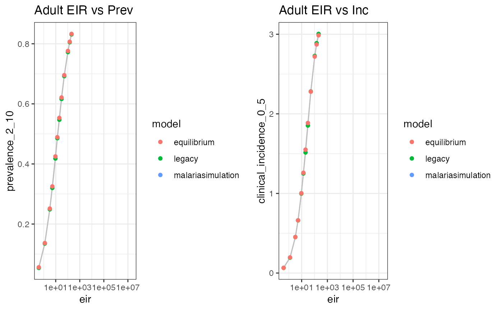
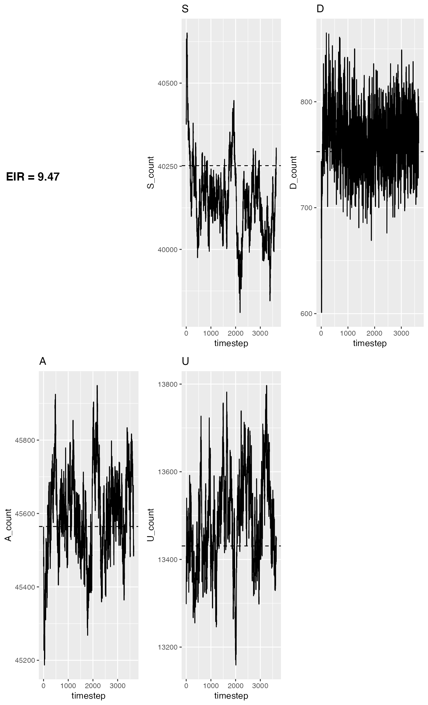

Equilibrium.RmdThis vignette demonstrates that the IBM is consistent with the equilibrium solution. And the legacy IBM
We can load some runs from the legacy model and store the EIRs for comparison
old_model_runs <- readRDS(
system.file('extdata', 'eir_prev_inc_old_model.RDS', package='msvalidation')
)
old_model_runs$model <- 'legacy'
eir <- old_model_runs$eirLet’s start by running the simulation for a range of EIRs:
year <- 365
warm_up <- 5 * year
period <- 5
population <- 1e5
eta <- 0.0001163315
fillna <- function(x, value) {
x[is.na(x)] <- value
x
}
get_ms_runs <- function(eir) {
params <- malariasimulation::get_parameters(list(
human_population = population,
clinical_incidence_rendering_min_ages = 0,
clinical_incidence_rendering_max_ages = 5 * year,
individual_mosquitoes = FALSE,
n_heterogeneity_groups = 5,
average_age = 1 / eta
))
params <- malariasimulation::set_equilibrium(params, eir)
malariasimulation::run_simulation(warm_up + period * year, params)
}
get_ms_values <- function(run) {
output <- tail(run, period * year)
c(
total_m = mean(output$total_M) / population,
clinical_incidence = mean(fillna(output$clin_inc_0_36500, 0)) * year,
clinical_incidence_0_5 = mean(fillna(output$clin_inc_0_1825, 0)) * year,
prevalence_2_10 = mean(output$pv_730_3650),
eir = mean(output$EIR) * year
)
}
ms_runs <- lapply(eir, get_ms_runs)
ms_values <- data.frame(
t(
vapply(
ms_runs,
get_ms_values,
numeric(5)
)
)
)
ms_values$model <- 'malariasimulation'And compute some outputs from malariaEquilibrium…
eq_params <- malariaEquilibrium::load_parameter_set()
eq_params$eta <- eta
eq_ages <- 0:999 / 10
get_eq <- function(eir) {
malariaEquilibrium::human_equilibrium(
EIR = eir,
ft = 0,
p = eq_params,
age = eq_ages
)
}
get_equilibrium_values <- function(eq, eir) {
u5 <- eq_ages < 5
g2l10 <- (eq_ages > 2) & (eq_ages < 10)
c(
total_m = NA,
clinical_incidence = sum(eq$states[, 'inc']) * year,
clinical_incidence_0_5 = sum(eq$states[u5, 'inc']) / sum(eq$states[u5, 'prop']) * year,
prevalence_2_10 = sum(eq$states[g2l10, 'pos_M']) / sum(eq$states[g2l10, 'prop']),
eir = eir
)
}
eq_data <- data.frame(
t(
vapply(
old_model_runs$eir,
function(e) get_equilibrium_values(get_eq(e), e),
numeric(5)
)
)
)
eq_data$model <- 'equilibrium'We can then compare our outputs to the equilibrium prevalence and incidence curves vs EIR…
out <- rbind(old_model_runs, eq_data, ms_values)
plots <- list(
ggplot(
out,
aes(x = eir, y = prevalence_2_10, group = model, color = model)
) +
geom_line(col = "grey") +
geom_point() +
scale_x_log10() +
theme_bw() +
labs(title = 'Adult EIR vs Prev'),
ggplot(
out,
aes(x = eir, y = clinical_incidence_0_5, group = model, color = model)
) +
geom_line(col = "grey") +
geom_point() +
scale_x_log10() +
theme_bw() +
labs(title = 'Adult EIR vs Inc')
)
plot_grid(plotlist = plots)
We can then look at the expected state counts for a medium EIR:
agreement_plot <- function(output, eq, title='Agreement') {
title <- ggdraw() +
draw_label(
title,
fontface = 'bold',
x = 0,
hjust = 0
) +
theme(
# add margin on the left of the drawing canvas,
# so title is aligned with left edge of first plot
plot.margin = margin(0, 0, 0, 7)
)
plot_grid(
title = title,
plotlist=lapply(
c('S', 'D', 'A', 'U'),
function(state) {
ggplot(output) +
geom_line(aes_string(x = 'timestep', y = paste0(state, '_count'))) +
geom_hline(
yintercept = sum(eq$states[,state]) * population,
linetype = 'dashed'
) +
labs(title = state)
}
))
}
agreement_plot(
ms_runs[[5]],
get_eq(eir[[5]]),
title=paste0('EIR = ', round(eir[[5]], 2))
)